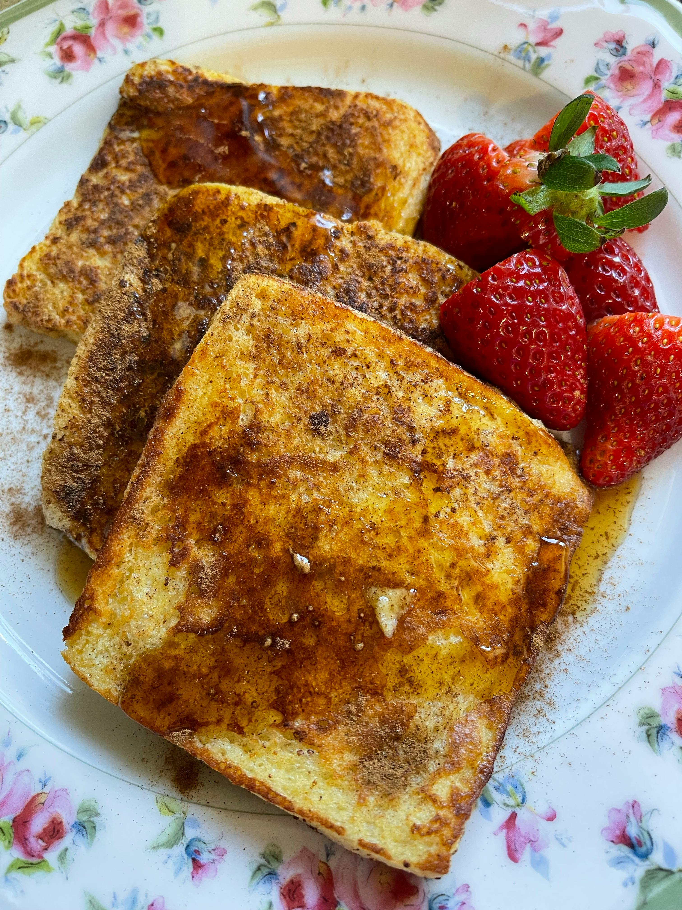

French Toast

Description:
The time has come. Today is the day where it will be determined just how much of a man you really are...that's correct, you have arrived upom the secret testosterone boosting french toast recipe itself. But are you ready? If so, continue reading...
Ingredients:
- 6 Slices White Bread
- 2 Large Eggs
- Milk
- Salt
- 2/3 Cup Milk
- 1 tbsp unsalted butter
(or as much as you like)
- (Optional)1 tsp vanilla extract
- (Optional)1/4 tsp ground cinnamon
(fun fact: french toast isnt really french)
Steps :
- Gather all ingredients
- Whisk milk, eggs, vanilla, cinnamon, and a pinch of salt together in a shallow bowl
- Light butter a griddle or skillet and heat over medium-high heat
- Dunk bread in the mixture, soaking both sides
- Transfer to the hot skillet and cook until golden on both sides, about 3-4 minutes per side
- Serve that bad boy up! You can also add additional flavors such as some strawberries or syrup